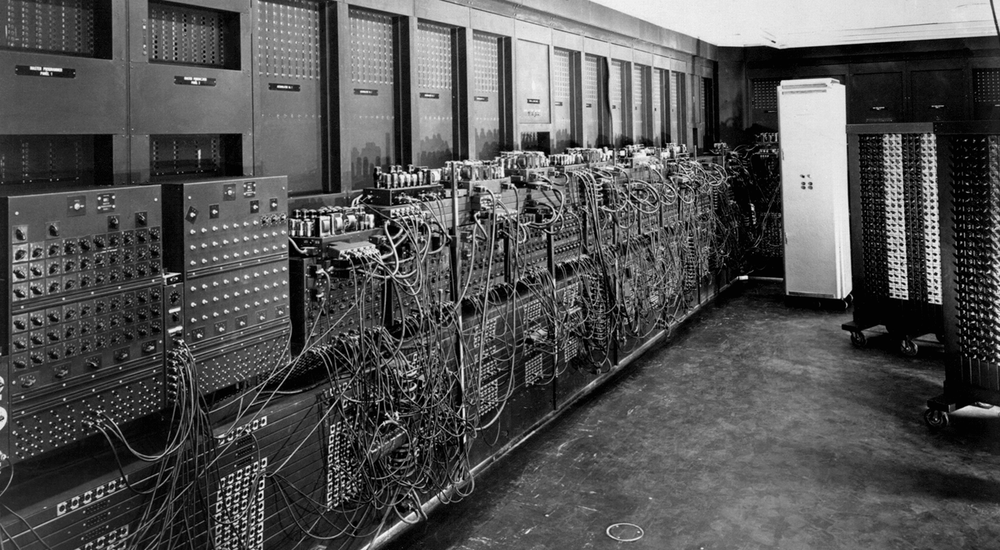

Neumann János
Matematikus, matematikai fizikus, a számítógép-tudomány megteremtője, a halmazelmélet, a kvantummechanika, az atomenergia és a számítógép-tervezés lángelméje, a princetoni Institute of Advanced Study professzora, az amerikai Atomenergia Bizottság tagja, az Eötvös Társulat tiszteletbeli tagja.
Élete
Jómódú budapesti családban született 1903. december 28-án, két öccse Miklós philadelphiai ügyvéd és Mihály chicagói orvos. Rajtuk kívül édesapja, Neumann Miksa budapesti bankár, édesanyja Kann Margit volt, édesanyjuk a gyereknevelést intézte. 1909-től 1913-ig általános iskolába járt. 1913-ban kezdett a fasori gimnáziumba járni. Ezt tartották akkoriban Magyarország legjobb középiskolájának. Kiváló történelem, jogi és közgazdasági képzést kapott. Az 1917/18-as tanévben a legjobb V. osztály matematikus, 1920-ban pedig az ország legjobb matematikusdiákja címet kapta meg. Mire leérettségizett, már jól képzett matematikusnak számított. Rátz László fedezte fel matematikai tehetségét. Később Kürschák József, Fekete Mihály és Szegő Gábor segítették Egyetemi tanulmányai során matematikai tovább fejlődését.
Fiatal kora óta érdeklődött a repülés es egyéb technikai újdonságok iránt is. Ekkor kezdett el gondolkodni egy kettes számrendeszen (0, 1) alapuló elektromos számológép megalkotásán. 1921-ben beiratkozott a Budapesti Tudományegyetem matematika szakára, ezzel párhuzamosan végzett egy berlini egyetemet is, ahol kémiát, fizikát és matematikát hallgatott. Apja úgy gondolta, hogy a matematikával nem lehet pénzt csinálni, ezért Neumann apja kívánságára vegyészmérnöki diplomát szerzett a Zürichi Műszaki Egyetemen 1925-ben.
Munkássága
1927 áprilisában tanári engedélyt kért a Friedrich Wilhelm Egyetemen. Decemberben professzorként kezdett ott dolgozni. 1929-ben a Princetoni Egyetem meghívta vendégprofesszornak. 1930 és 1933 között minden félévben az Egyesült Államokban és minden második félévben Európában tanított. Végül az Egyesült Államokban telepedett le, ahol az Institute for Advanced Study tagja lett. 1937-ben sikeresen megszerezte az amerikai állampolgárságot. Mikor elkerülhetetlennek látta a világháborút, akkor részt vet az atomenergetikai háborús célú felhasználásának kutatásában (Manhattan terv), végül ennek a békés energiatermelés szolgálatába állításában is.
Amerikába költözése előtt hazajött Magyarországra, hogy feleségül vegye Köves Mariettát. 1935-ben született leányuk, Marina Whitman-Neumann. Amikor első felesége elvált tőle, 1938-ban, még a 2. világháború előtt Neumann János még egyszer Budapestre látogatott, hogy feleségül vegye Dán Klárit, akiből azután az elektronikus számítógépek egyik első programozója lett.
1945 és 1957 között a princetoni Elektronikus Számítógép projekt igazgatója volt. Ekkor az emberi agy, valamint az idegrendszer működését utánzó gépek érdekelték. 1944-ben a pennsylvaniai egyetemen meghatározó módon járult hozzá az első teljesen elektronikus számítógép, az ENIAC (Electronic Integrator And Computer) megalkotásában, amely 1945-ben készült el teljesen.


1945 júliusában írta meg azt a művét, melyben a "Neumann-elvek"-et, a számítástechnika, és a számítógépek általa elképzelt fejlődéséről olvashatott a világ. 1945-ben a Cambridge-i Egyetemen elkészült az első tárolt programokat tartalmazó elektronikus számítógép, az EDSAC (Electronic Delay Storage Automatic Computer), amely már a "Neumann-elv" szerint működött. A számítógép működéséhez a biológiát hívta segítségül: az emberi agy feladatmegoldásainak mintájára megalkotta az algoritmust, s az agyat vette alapul a számítógépben való számítások elvégzésének megvalósításához. Hőstetteinek elismeréseként az Amerikai Egyesült Államok elnöke kinevezte az Egyesült Államok Atomenergia Bizottságának elnökévé.
Hátralévő éveiben súlyos csontrák betegségben szenvedett, amelyet feltehetőleg az atombomba kutatásának éveiben szerzett, sugárfertőzés által. Utolsó művét is a számítógépekről írta 1956-ban. 1957. február 8-án halt meg Washingtonban, Amerikában.